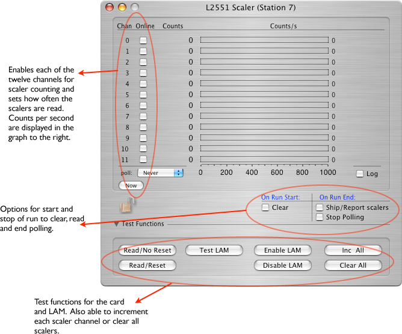

This is a 12-channel scaler counter capable of counting NIM pulses at high speed (signal must be greater than 5 ns). The scaler is a 24-bit counter. It is made by LeCroy.
Catalog Icon:
This card can exist only in a CAMAC crate.

The card will only use the long form.
version 2 (long form)
xxxx xxxx xxxx xxxx xxxx xxxx xxxx xxxx ^^^^ ^^^^ ^^^^ ^^----------------------- L2249 ID (from header) -----------------^^ ^^^^ ^^^^ ^^^^ ^^^^- length xxxx xxxx xxxx xxxx xxxx xxxx xxxx xxxx ------------------^--------------------- Crate number ---------------------------------^-^^^^- Card number Scaler word -- repeats for each channel enabled up to 12 total xxxx xxxx xxxx xxxx xxxx xxxx xxxx xxxx ^^^^------------------------------------ Channel number ----------^^^^-^^^^-^^^^-^^^^-^^^^-^^^^- adc value